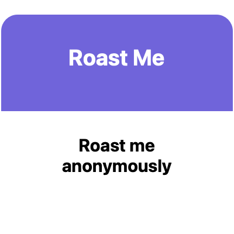

Snapchat sharing test
Snapchat-generated link card

Open this page in Safari on your iPhone and tap the Snapchat button. Choose Attach URL to Snap if offered. This is a sample; it does not collect responses.Loading Snapchat share button…